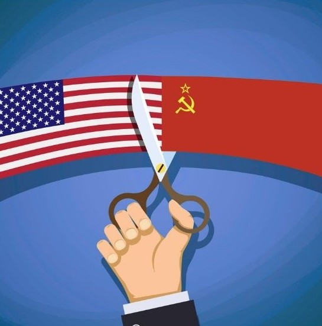
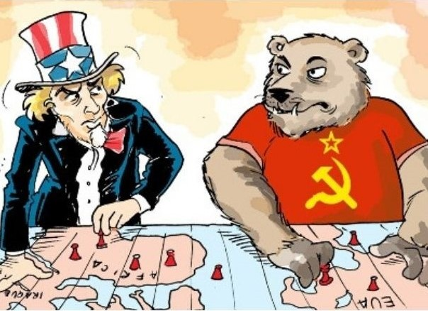

Como ocorreu a Guerra Fria
A Guerra Fria foi um conflito travado pelos Estados Unidos (EUA) e a União Soviética (URSS), que se estendeu de 1947 até o ano de 1991, logo após o fim da Segunda Guerra Mundial, quando essas duas potências se uniram para derrotar a Alemanha Nazista. A causa desse conflito político e ideológico foi porque cada potência representava ideologias distintas: o capitalismo e o socialismo.
Em 1947, começou oficialmente o conflito indireto, incentivado pelas diferenças ideológicas entre as duas potências, onde os Estados Unidos representavam o capitalismo, enquanto a União Soviética representava o socialismo.
Alguns historiadores consideram que a causa para esse conflito ter começado foi um discurso realizado pelo presidente norte-americano Harry Truman, onde ele pedia o aumento na liberação de verbas para que os EUA barrassem o avanço do socialismo.
Depois desse discurso, nasceu a Doutrina Truman, uma ideologia que junatava um conjunto de medidas tomadas pelos Estados Unidos para conter o avanço do socialismo pela Europa. O discurso feito por Harry Truman criou um clima alarmista entre as duas nações a partir daí, o conflito começou.
 